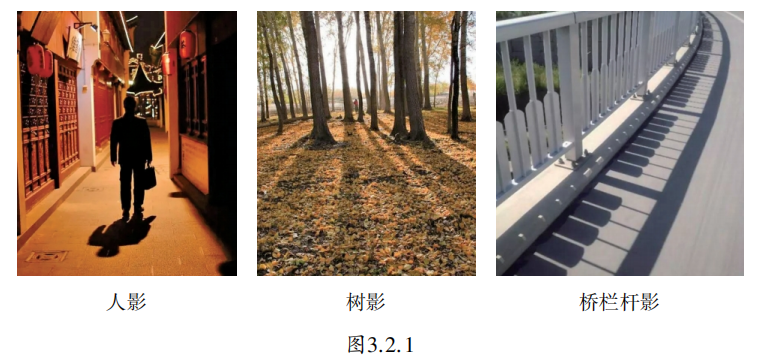
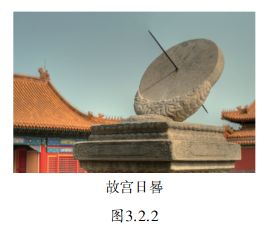
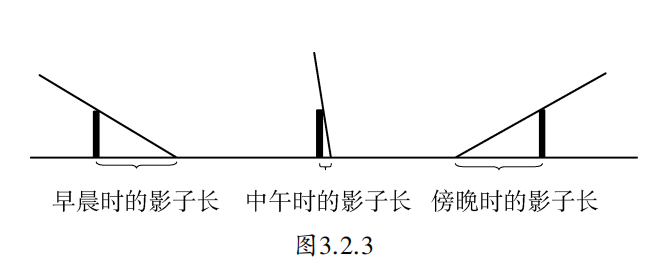
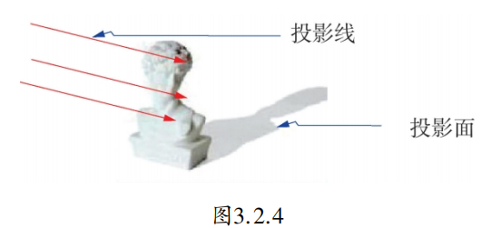
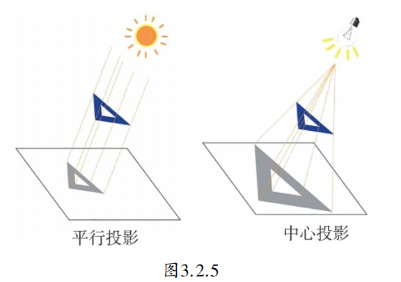
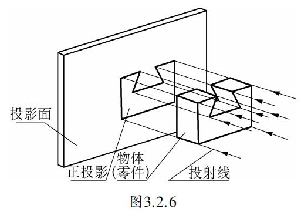

工人在建造房子之前，首先要看房子的图纸。但在平面上画空间的物体不是一件简单的事，因为必须要把它们画得从各个角度都能看得很清楚。为了解决这个问题，可以采用三视图法。建筑工程师和工人为了描绘和制造各种物体，常常使用这种方法。
三视图是一种特殊的视图，而视图又来自于投影。投影现象广泛存在于我们的日常生活中。在阳光或者灯光下，我们会看到人影、树影或建筑物的影子等（图3.2.1）。

日晷，是中国古代利用日影测定时刻的计时器。“晷”字，古意是太阳的影子。在圆形石盘上刻出时刻，中间立金属晷针，和盘面垂直。古人根据太阳的投影与地球自转所形成的日影长短的变化及方向的不同确定时刻。古代宫殿前的日晷亦为皇权的象征，一般与嘉量并列于左右，象征天地一统，江山永固。（图3.2.2）

如图3.2.3所示，物体在太阳光下的影子在一天中会有时长、有时短，位置也在不断变化。

物体在灯光下的影子也随物体离灯光的距离和灯光照射的角度而发生变化。
一般地，用光线照射物体在某个面（地面、墙壁、幕布等）上得到的影子叫做物体的投影（projection）。照射光线叫做投影线，投影所在的面叫做投影面。如图3.2.4所示。

由平行光线形成的投影，叫做平行投影（parallel projection）。物体在太阳光照射下形成的影子就是平行投影。由一点发出的光线形成的投影，叫做中心投影（center projection）。物体在灯泡发出的光照射下形成的影子就可以看成是中心投影。如图3.2.5所示。

当投影线垂直于投影面时，产生的平行投影称为正投影。如图3.2.6所示。

用手电筒照射书本，观察书本在墙面上的影子的变化：
你会发现，物体投影的大小和形状，随着光线射入的角度及与光源距离的变化而变化。记录你的观察结果，并与同学交流。
1. 平行投影：太阳光下的树影、人影；中心投影：灯光下的影子、手影戏。
2. 不一定一样长。当两人站在与路灯距离相同的位置时，影子可能一样长（还需考虑两人身高相同且站立方向相同）。
抽象思想： 从生活中的影子现象抽象出投影、投影线、投影面等数学概念。
分类思想： 根据光线来源将投影分为平行投影和中心投影，再根据光线方向提炼出正投影。
模型思想： 用数学语言（投影模型）描述和解释生活中的影子变化，为后续视图学习奠定基础。
早在公元前5世纪，古希腊哲学家阿那克萨哥拉就曾利用日影解释月相变化。中国古代的日晷、圭表都是利用投影原理测量时间的杰出创造。现代建筑设计中，投影被用来分析建筑的日照阴影；医学成像（X光、CT）也基于投影重建技术。可以说，投影不仅是几何学的基础概念，更是连接数学与现实世界的重要桥梁。
✨ 从具体到抽象，用数学的眼光看世界 ✨